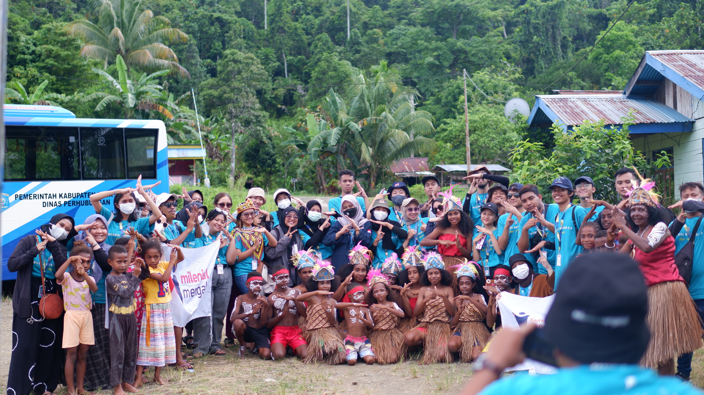
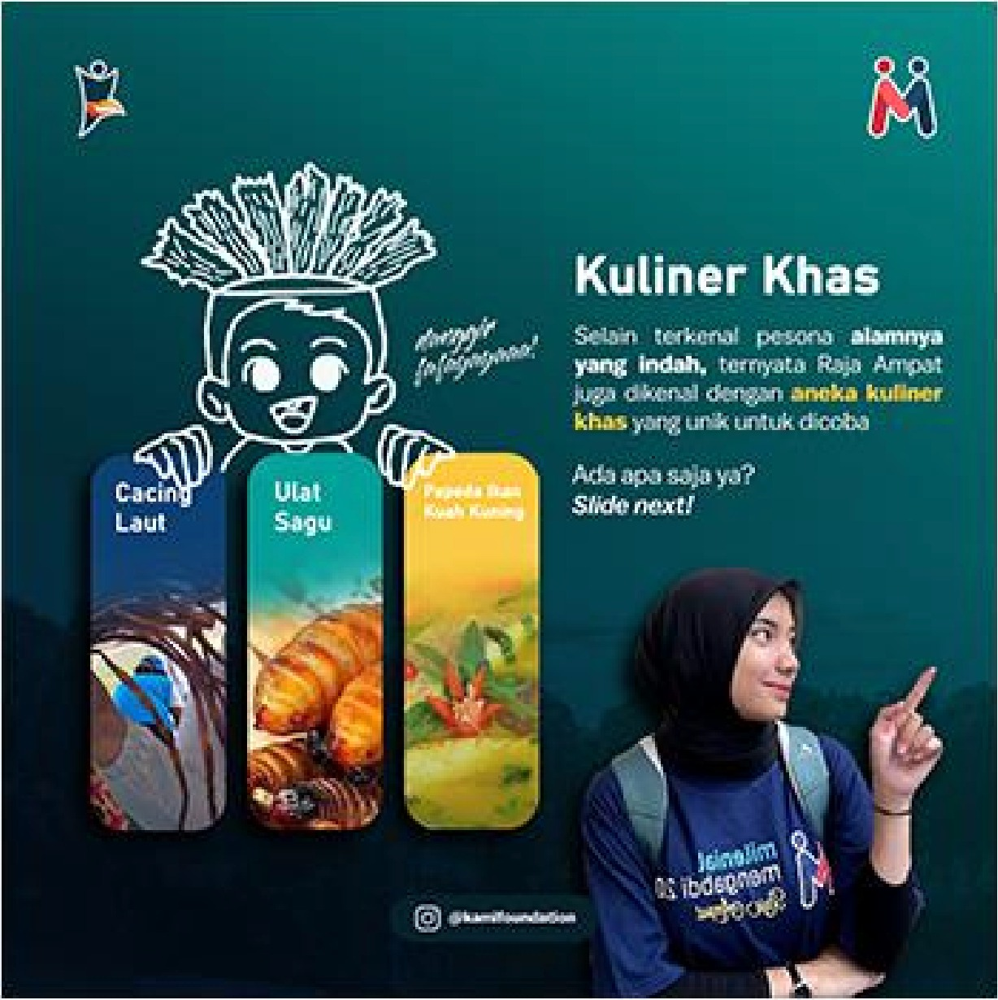
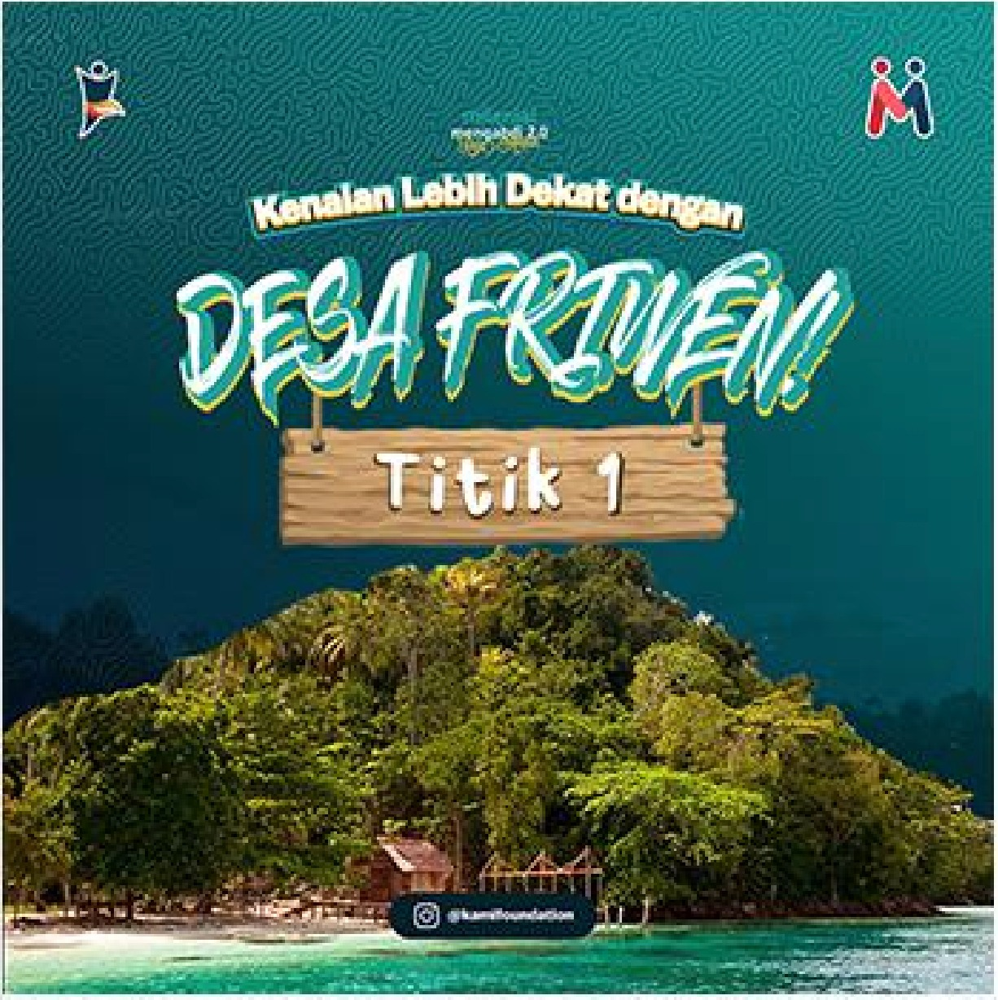
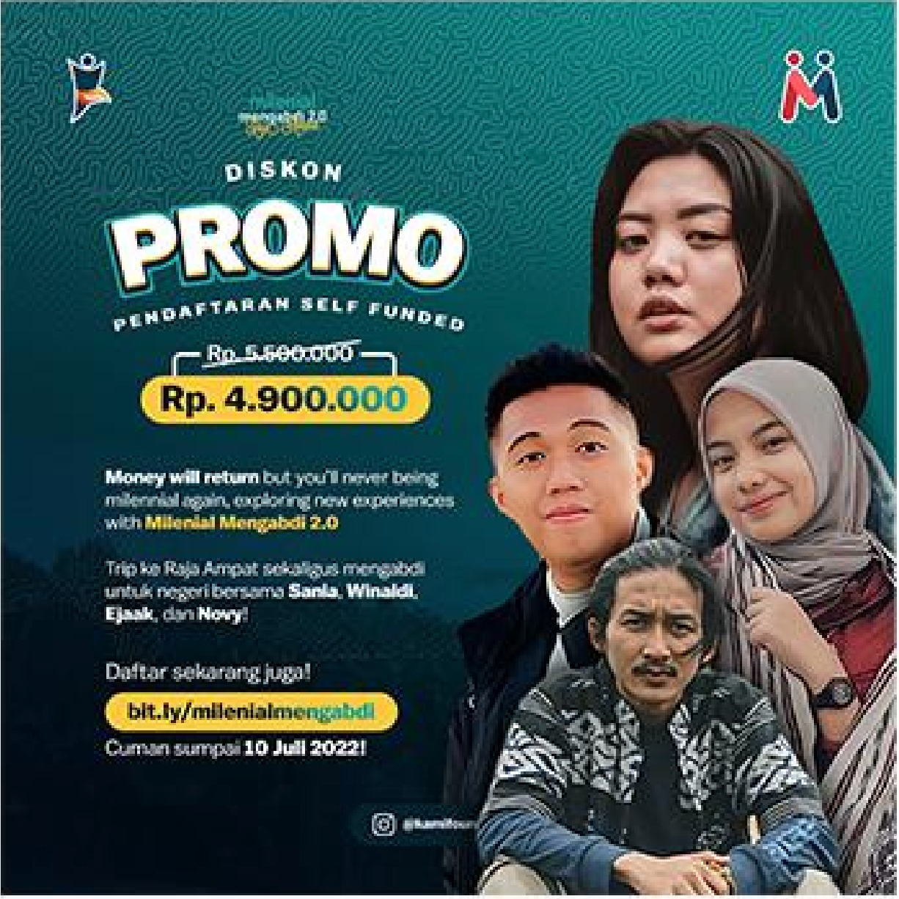
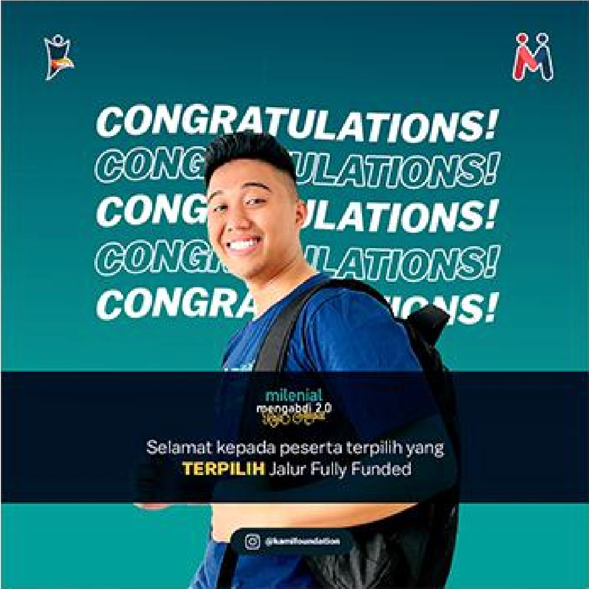
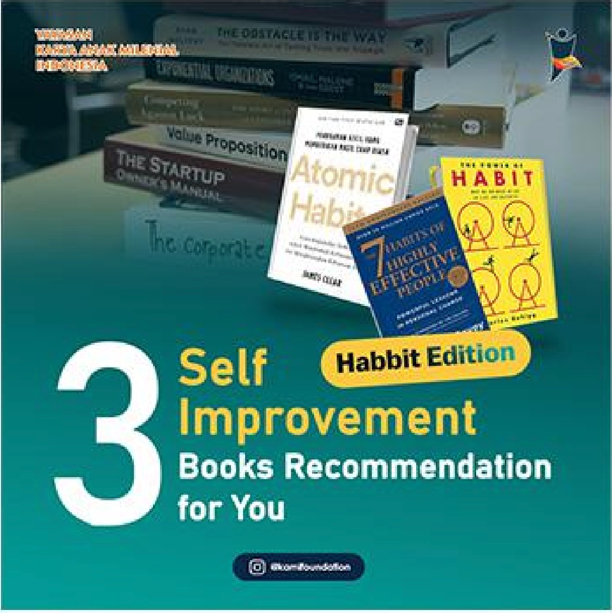
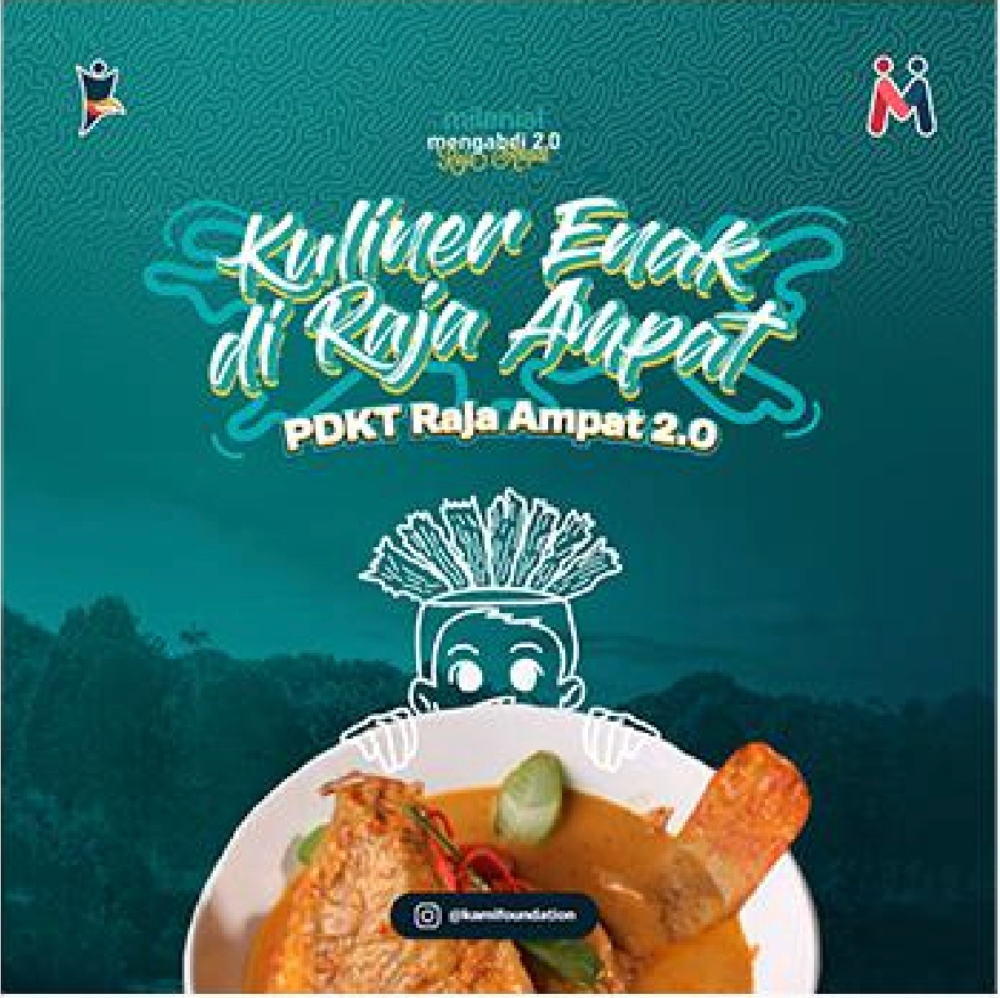

KAMI Foundation (Millennial Karya Anak Foundation) is a Non-Profit Organization that serves as a forum for Indonesian youths to develop themselves and share their ideas, innovations, and works. I handled the full graphic design output for their Bakti Milenial program — including Instagram feeds, LinkedIn content, YouTube thumbnails, editorial design, and merchandise.
Enam lini desain yang aku kerjakan untuk mendukung program Bakti Milenial KAMI Foundation — dari konten harian Instagram hingga material cetak dan merchandise.
Beberapa hasil desain Instagram feeds yang diproduksi untuk program Bakti Milenial — Milenial Mengabdi 2.0.





